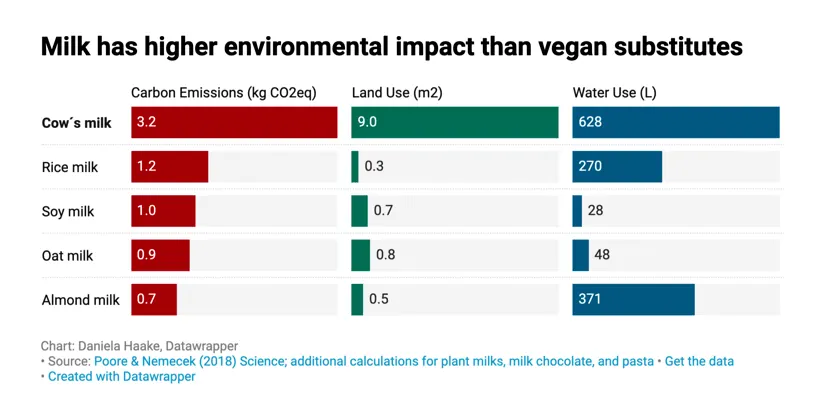
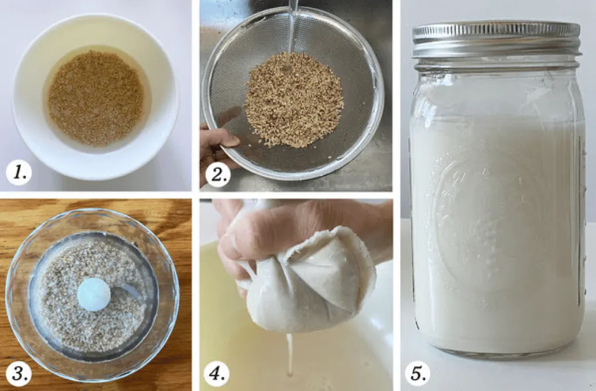

You probably already know that plant-based milks have a much lower carbon footprint than cow’s milk — the production of dairy products accounts for almost 4% of emissions worldwide each year. Each day, a dairy cow will eat ~50 lbs of dry matter and drink 30-50 gallons of water. A 2018 University of Oxford study showed that producing a glass of dairy milk results in almost 3x more greenhouse gas emissions than any plant-based milk and consumes 9x more land than any of the milk alternatives!
But with the ballooning plant-based milk industry, there are so many different plant-based alternatives, from the mainstream soy, almond, and coconut milk to the bougie hemp, cashew, and macadamia milk. Who is the winner when it comes to environmental impact?

- Soy milk can be a good choice, especially if you buy organic or non-GMO soybeans grown in the U.S. or Canada. Soy milk is produced by soaking and grinding soybeans, boiling the mixture, and filtering out the remaining particulates. Soybeans use less than a tenth of the water that almonds do; however, it uses more land and is produced largely in South America where it is a big cause of deforestation. However, the majority of soybean cultivation worldwide, especially in South America, is intended for livestock fodder rather than soy milk production.
- Oat milk is a top contender for the most environmentally friendly plant-based milk. It is made by measuring and milling oat grains to separate their outer hull, mixing the grains with warm water and pulverizing it into a slurry, then subjecting it to heat and enzymes to produce a thick liquid oat milk base. Oat milk produces small amounts of carbon dioxide and no methane, and uses the least amount of water out of the plant-based milks: oat milk production requires 15 times less water than dairy milk and 8 times less than almond milk! However, oats are often contaminated with glyphosate at levels considered unsafe, as farmers spray Roundup on the crop right before harvest. (Fyi Oatly claims that its oats are certified glyphosate free). At the same time, many conventionally farmed crops including wheat and corn are also sprayed with glyphosate before harvesting, so while worrisome, it probably isn’t practical to immediately ditch all oat products. If possible, it may be a good idea to buy from companies sourcing organic (or at least glyphosate-free) oats.
- Almond milk is probably not the best bang for the buck (which is hard for me to accept, as I am a huge fan of both almond milk and almond butter). It is made by grinding almonds in a blender with water, then straining out the almond pulp (flesh) with a strainer or cheesecloth. Almonds are a huge industry in California, which especially recently has been highlighted as a serious problem, given the record-breaking drought the American Southwest is currently facing. Almonds use a serious amount of water — the total water footprint for one California almond averages 3.2 gallons! A single glass requires 74 liters of water (more than a typical shower). What’s worse, the process of turning the nuts into milk eliminates most of the nutrients which all that precious water just went into growing. There are also very few almonds in each carton, giving you very few nutrients even if they were kept intact. And they’re not great for bees, many of which die each year on the shipping journey to California from all around the country to pollinate the crop.
- Coconut milk seems to have a smaller environmental impact, as coconut trees use small amounts of water and absorb carbon dioxide. Coconut milk is made by mixing solid coconut flesh with water to make coconut milk, which is about 50% water. However, as coconut trees only grow in tropical climates (Indonesia, the Philippines, and India are the leading producers), the pressure to meet global demand leads to exploitation of workers and destruction of rainforests, not to mention the food transportation that contributes to GHG emissions. Look for coconut products that are certified Fair Trade.
- Rice milk has its fair share of downsides. It is made by pressing the rice through a grinding mill, followed by filtration and blending in water. Rice is also a comparatively thirsty crop, requiring 54 liters of water per glass, and it uses the most GHG emissions compared to other plant-based options because methane-producing bacteria develop in the rice paddies.
- Other up and coming milks: Hazelnuts, unlike almonds, are pollinated by the wind rather than commercial honeybees and they grow in moist climates, such as the Pacific Northwest, where water is less of an issue. “Niche crops” such as hemp and flax are also grown in relatively small quantities in the northern hemisphere, which makes them more environmentally friendly compared with a monoculture operation. Macadamia, cashew, and pea milks are generally relatively moderate in these categories, at least compared to almond milk, with their own pros and cons. If you have the budget and the desire to be a little more fancy in your milk selection, consider these bougie and potentially more environmentally friendly options!
Bottom line: What is indisputably clear is that cow’s milk is the least environmentally friendly option across the board. Within plant-based alternatives, the verdict is unclear, as not enough research or life-cycle assessments have been done so far, and much of the research that does exist has been done by plant-based milk producers themselves. Your choice will likely depend on whether you most want to limit carbon emissions, land use, or water use, as well as on other factors including health benefits, taste, and price preferences.
If you’d rather have even more environmentally friendly plant-based milk, consider making your own! Did you know making plant-based milks can be simple AND doesn’t require any fancy equipment? Just follow these 5 steps for soy, almond, or oat milk:
- SOAK a cup of soy, almonds or oats in plenty of water overnight.
- RINSE. For oats, this prevents the milk from getting slimy and glutinous.
- BLEND with 3 cups of water for 2 minutes.
- STRAIN. Pour into a clean cheesecloth or “nut milk bag” and squeeze out the milk.
- ENJOY! For soy or almond milk, gently heat until just before it boils. Lasts 5 days in the fridge.
